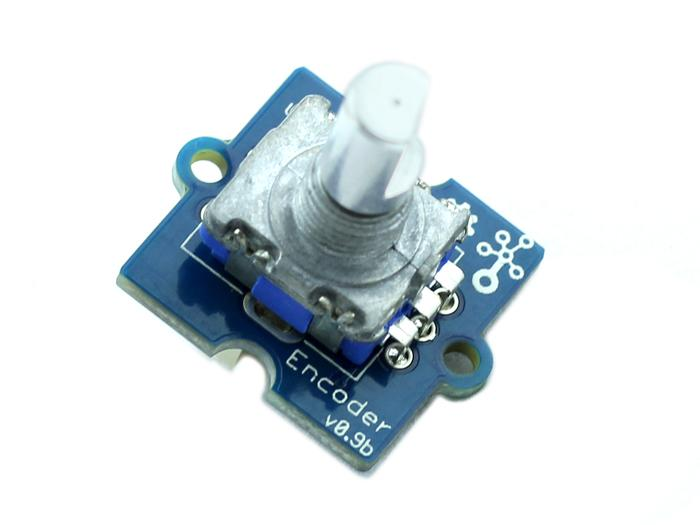
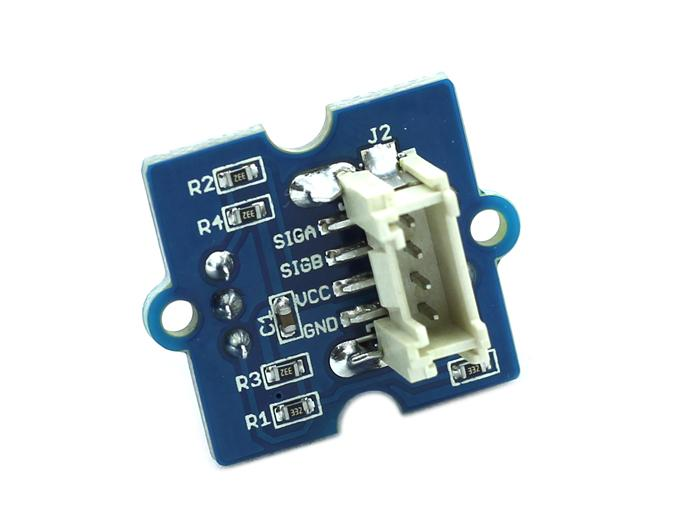
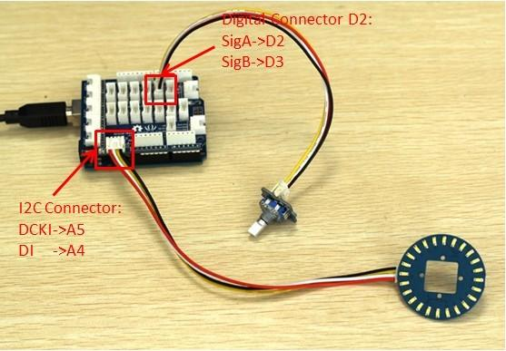
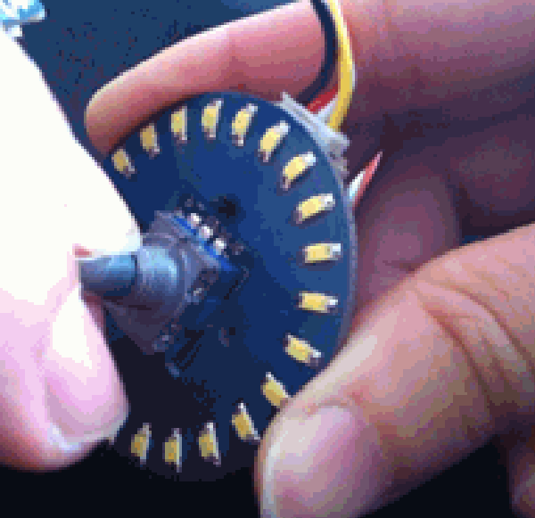

This module is an incremental rotary encoder. It encodes the rotation signal from the axis and output the signal by electronic pulse. The Grove – Encoder is one of the Grove series and has a standard Grove interface.
When you need to add a rotary knob to your project, for example a volume knob for a speaker, a selection panel or a digital input, this will be your first choice.

| Item | Min | Typical | Max | Unit |
|---|---|---|---|---|
| Voltage | 4.5 | 5 | 5.5 | V |
| Current | 10 | 20 | 30 | mA |
| Dimension | 20x 20 | mm | ||
| Net Weight | 12 | g | ||
This Grove-Encoder is very easy to use with the Encoder Lib designed by seeedstudio. Simply connect this module to the D2 connector of Base Shield and you can start using. The following is a introduction of how to make a Circular LED bar (the idea came from seeedstudio wish）.

#include <CircularLED.h> #include <Encoder.h> #include <TimerOne.h> CircularLED circularLED; unsigned int LED[24]; int index_LED; void setup() { encoder.Timer_init(); } void loop() { if (encoder.rotate_flag ==1) { if (encoder.direct==1) { index_LED++; if (index_LED>23) index_LED=24; SenttocircularBar(index_LED); } else { index_LED--; if(index_LED<0) index_LED=0; SenttocircularBar(index_LED); } encoder.rotate_flag =0; } } void SenttocircularBar(int index) { for (int i=0;i<24;i++) { if (i<index) { LED[i]=0xff; } else LED[i]=0; } circularLED.CircularLEDWrite(LED); }

Note: It is able to generate another signal when it’s being pressed down. However due to the limitation of the number of Grove signal cable, the module is made without output of this signal.